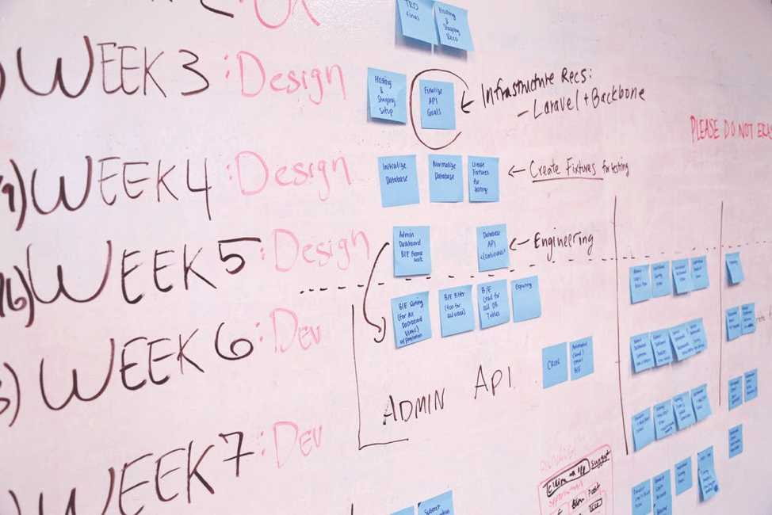

Specialist Advice to Successfully Launch a Mobile App
When it concerns introducing a mobile app for your business, it's vital to do it right. Your app, whatever sector you're in, will certainly aid enhance client experience and also sales on the whole. Whether you've efficiently launched a mobile app for your service in the previous or this is your very first time, below is skilled advice for an effective application launch every action of the way.
Pre Launch
In order to successfully release a mobile application, you need to think of the critical pre-launch procedure. Below's how to get started.
Specify Buyer Persona
Before you've even begun creating your app, you ought to have had a look at your customer personality. Your app requires to meet a certain requirement to make it successful amongst your customers. Considering what trouble you're addressing as well as who you're fixing it for will certainly enhance the chances of success.
Study Competitors
Take an appearance at their apps to see exactly how you can improve on what they're trying to achieve if services in your certain market have released applications prior to you. Act you are a consumer and utilize your rival's app to perform the typical jobs a client would. When launching your very own application, make a note of any kind of issues you see with the application and also anything you would do in a different way as well as keep these in mind.
Conduct Market Research
Market research should be your very first step when it pertains to establishing an application to see if there is a demand for your product while showing the numerous possibilities to distinguish on your own from rivals. When it comes time to create a reliable advertising and marketing approach, this easy step will assist you.
Create Marketing Strategy
You don't intend to wait until your app prepares to launch prior to developing a marketing strategy. You need to get your new app right into the hands of your consumers, so you must consider your advertising method throughout the whole application advancement process. Key facets you ought to consider are:
App Name: The name will be an essential aspect to help customers locate your new application. Your name should be creative, yet also consist of the performance in the name to make sure that your consumers recognize what it's for. You can also include your trademark name so that they know exactly how to try to find it in the application store.
Keyword phrases: Start your key words research early to make sure that you can launch your application with optimized pages as well as use those key words on the advertising materials you'll utilize.
Previews: Your customers will certainly intend to see what the application appears like before picking to download and install. You should have visuals that plainly demonstrate the application and the uses to show customers exactly how the app can boost their everyday lives or fix an instant problem.
Construct Buzz
As component of your advertising technique, you should utilize tools like social media sites and content marketing to help you produce as well as develop buzz before the application is introduced. You can develop a social networks presence to connect with your target audience and link back to the application store. Continue to market in your favored methods throughout the entire launch process instead of just allowing it fizz out after first outreach. This will aid continually advertise the app and also reach brand-new consumers.
Beta Testing with Potential Users
If your application is what the customers want is to check it on actual customers, the best method to locate out. Getting very early comments from your target audience can help you prevent expensive errors and verify your existing principle.
Execute In-App Analytics
Analytics will assist you collect information as well as much better understand your users. You'll need to comprehend customer actions to improve overall individual experience as well as optimize your advertising and marketing strategy. Concentrate on metrics that are the most helpful for your company as well as advertising and marketing technique that will certainly assist you much better market to your target clients.
Develop a Press Kit
To increase your public connections initiatives when it involves launching an app, you must have a press set currently produced by the time of launch. A journalist will need to be able to find details regarding the app without the need to call your organisation. They'll want details quick so it's vital for your press package to include: a press release, store icons as well as screenshots, video trial, app description, testimonials, and also company info.
Testimonial Official Submission Guidelines
Apple and Google both have checklist overviews that will certainly assist you introduce your application. These main standards require to be complied with prior to launching your application as well as submitting it to the shop.
Center Your App
Your application requires to reach your target audience so it's important to center your application and also add the appropriate resources to release an application and also makes certain that a certain nation, language, place, or culture is supported. You may have to change the language depending on area to ensure your app can be accessible across your entire target market. Thankfully, because you've already defined the customer identity, you'll understand if this requires to be done ahead of time.
Schedule and Prepare For Your Launch Date
You'll intend to arrange your launch date at a time where you'll be available to take care of questions from the press, consumers, and everybody in between. This will be an active time for your business, so it's important you set aside time to handle every little thing that enters into the launch. Be prepared to get messages from journalism as well as consumers alike who have inquiries or may require help.
At Launch
Since your application prepares to introduce, you'll need to carry out a couple of tasks to ensure your application is accessible, easy to locate, as well as marketed correctly.
Purchase App Store Optimization
Among the major methods of app discovery is checking out the application store. App Store Optimization (ASO) strategies are going to be exceptionally useful to make sure that your target audience can quickly discover the new application. ASO allows your application the ability to place higher and also make them conveniently discoverable to your target market. You must check and enhance your app's name, search phrases, summary, and aesthetic properties.
Proceed the Buzz
Before introducing your application, you may have put a focus on PR. Throughout the launch, you'll require to remain to maintain the buzz of your brand-new application to place it in form of more users. Simply reaching out to journalists in your specific niche or sector can help you develop buzz. You need to utilize journalism kit you produced pre-launch to make sure that they can obtain a better suggestion of just how the app works and also who your business is.
Develop Ratings
Positive evaluations can boost application downloads. On launch day, you'll want to get as several positive reviews as feasible. This will certainly aid your app right away attract attention in the store to achieve organic downloads and exposure. Your beta examination users are an excellent area to begin. Ask to rate the application to help you obtain downloads as well as even more reviews when launch.
Use Paid Ads
A limited app launch project can assist develop recognition and also boost downloads. While paid promotions might not be one of the most cost-effective way to continuously promote an application, paid ads can be provided for a limited time to boost preliminary exposure.
Blog post Launch
Congratulations! Your app has actually been launched and also you're prepared to start getting downloads. The work is not over yet as you'll require to follow up with your launch with a few basic tasks.
Plan Ongoing Engagement
Conversion depends on customer interaction. You'll require to remain involved with your consumers to keep them returning as well as having a favorable experience with your application. Take into consideration how to construct user engagement using special deals, discounts, reminders, and other information beneficial to your customers.
Monitor App Performance
After your application has actually launched, you'll require to gauge as well as check your crucial metrics to conveniently recognize client actions as well as exactly how individuals are utilizing your app. You'll be able to see the circulation of your application and likewise where individuals leave of the application along with various other locations that need enhancement. Staying updated with your clients' metrics will certainly help you constantly boost your application based upon their demands.